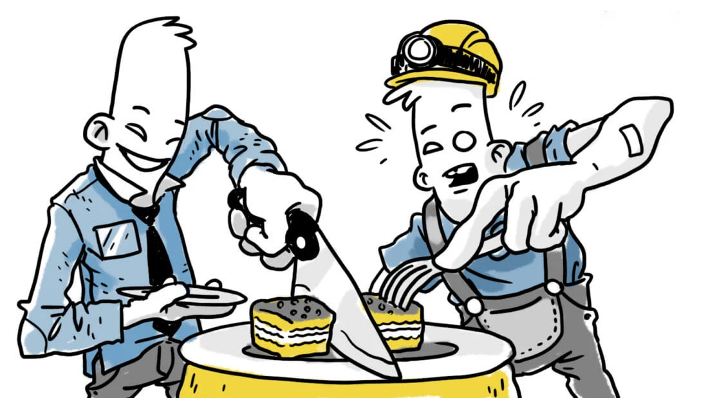

Майнинг и майнеры: специфика процесса и участников
Все криптосистемы, работая с информацией, используют компьютерные мощности, и они просто огромные, поэтому
рождается логичный вопрос – где их брать, что и поспособствовало появлению такого термина, как майнинг (добыча
криптовалют).
Что это такое? Добыча монет посредством ресурсоемких расчетов. Это задача, доступная многим пользователям,
которые отдают части мощности своего компьютера для решения тех задач, что связаны с заработком криптовалюты.
Существует несколько возможностей заработка на майнинге:
- Через ПК – скачивается специальное программное обеспечение, которое позволяет направить часть мощности на
процесс обсчета криптовалют. Здесь не нужны какие-то капиталовложения, однако и заработать таким образом
можно немного.
- Майнить можно через специальное оборудование (интегральную схему спецназначения), создавая «ферму»,
активно работающую и приносящую стабильный доход. В народе это более известно, как асики (ASIC) –
интегральная схема специального назначения, то есть такая схема, что сосредоточена на решении одной
конкретной задачи, в нашем случае – это заработок криптовалюты, например, Биткоинов. В этом случае нежно
позаботиться о приобретении качественного и мощного оборудования, так как от этого напрямую будет зависеть
дальнейший заработок в промышленных масштабах. Ферма представляет собой множество компьютеров, которые
способны выполнять на должном уровне вычисления, работая круглосуточно без перерывов на обед. Чтобы
эффективно добывать криптовалюту, потребуется соответствующие мощные видеокарты, блоки питания. Формирование
фермы – это всегда существенные затраты, которые напрямую связаны с покупкой оборудования, оплатой
электроэнергии.
- Нередко майнеры принимают решение брать такие мощности в аренду. Это и есть «облачный майнинг». Эта модель
характеризуется использованием облачных сервисов, как и следует из названия. Группы майнеров собираются в
некие структуры, и их приоритетная цель – получение хорошей прибыли, которая намного выше, чем при
индивидуальном майнинге. Схема такова – компания приобретает современное и мощное оборудование, настраивает
его и сдает майнерам в аренду, а на себя берет все вопросы относительно сервиса, оплаты коммунальных
платежей и иные аспекты (см. сервисы для работы с облачным майнингом).
- Если вы не желаете вкладывать крупные суммы, а стабильная и небольшая прибыль в приоритете, можно
рассмотреть вариант присоединения к пулам. Это узел, интегрирующий в себе некое число майнеров (у всех них
различная вычислительная мощность). У всех участников одна цель – отыскать корректный блок. За первый
правильный блок вознаграждение будет получать тот пул, что распределяет прибыль между участниками с учетом
вклада каждого и них, преследуя принцип справедливости.
Интересно, что сам термин «майнинг» переводится с английского языка, как «добыча
полезных ископаемых», вот только ни кирка, ни лопата здесь не пригодятся, так как достаточно иметь на
руках
мощную вычислительную систему, чтобы она помогала процессу записи блока транзакций в блокчейн.
Майнинг и майнинг ферма - что это простыми словами
Майнингом называют способ получения дохода, основанный на создании новых блоков в распределенной платформе.
Вознаграждение выплачивается в виде криптовалюты – виртуальной счетной единицы. Объем дохода устанавливается
разработчиком программного кода.
Майнинг осуществляется с помощью фермы, представляющей собой совокупность устройств, подключенных к сети
блокчейн. Технически ферма для майнинга – это каскады из видеокарт, подключенных к компьютеру с несколькими
мощными блоками питания. Основное внимание при сборке данного устройства уделяется производительности
видеокарт. Единицей измерения мощности обработки информации такой фермы называют хешрейт.
Хорошими показателями мощности считается 25-28 Mh/s (мегахэш в секунду) на каждую видеокарту.
(так считалось на 2017 год, но на данный момент такое количество мегахэш, конечно же, не имеет большой
прибыльности, а более показательными и прибыльными видеокартами являются те, которые способны выдавать
60+ Mh/s)
В 2013 году в Канаде появился первый банкомат для операций с цифровой валютой. В
устройстве можно обналичивать Bitcoin.
Как работает майнинг ферма. Что считает майнинг
ферма
Суть работы фермы для майнинга состоит в отслеживании и обработке новых блоков транзакций в
специализированной сети блокчейн. Обнаруженный блок будет приносить доход в виде биткоина или другой
криптовалюты. Для нахождения каждого блока может потребоваться от нескольких минут до нескольких дней.
Это зависит от 2 факторов:
- Производительность оборудования. Чем мощнее ферма, тем быстрее производство криптовалюты.
- Сложность сети Увеличение количества майнеров (что стремительно происходит в данный
момент) в сети будет уменьшать стоимость обнаруженного блока и увеличивать время на его нахождение.
Используемые в настоящий момент фермы для майнинга можно разделить на 3 типа:
- Устройства, в которых основным вычислительным элементом являются видеокарты. В первые
годы после создания Bitcoin графические процессоры AMD показывали хорошую результативность в добыче
криптовалюты. Сейчас этот метод для майнинга Bitcoin применяется все реже. Причиной тому стало появление
крупных фермеров промышленного масштаба, использующих для добычи цифрового золота огромные мощности и
новейшее дорогостоящее оборудование. Это сильно повысило сложность сети и сделало добычу Bitcoin на
видеокартах нерентабельной. Сегодня способ применяется на альтернативных криптовалютах.
- Устройства на основе модулей FPGA. Это оборудование не уступает в производительности
майнингу на видеокартах, но при этом не нуждается в затратной системе охлаждения. Это делает такие
устройства более рентабельными и компактными.
- Системы на ASIC-процессорах. (АСИКИ) Эти устройства были сделаны целенаправленно для
майнинга Bitcoin. Сейчас такие системы признаны лучшими по соотношению производительности и цены. Минусом
является то, что данные устройства не годятся для добычи других криптовалют, кроме Bitcoin.
В алгоритме Bitcoin заложено одно очень важное обстоятельство: общее количество
монет не должно превышать 21 миллион. По достижению этой отметки их эмиссия будет остановлена. В связи с
этим фактом многие аналитики предрекают скорый крах цифровой валюты.
Способы добычи через ферму
Добывать цифровые монеты можно 2 способами:
- Соло. В этом случае разработка блока осуществляется в одиночку и вся прибыль остается у
хозяина фермы. Минусом такого способа является необходимость мощного оборудования и большого количества
времени для получения прибыли.
- С помощью пулов – специальных служб, представляющих собой сеть, к которой добытчики
цифрового золота подключают свои майнинг фермы. Прибыль в этом случае делится между всеми участниками пула
пропорционально мощностям.
Для того чтобы определиться на способе майнинга рекомендуется какое-то время помайнить и в пуле и соло. Так
можно выбрать наиболее выгодный способ для своей фермы.
Что лучше: купить готовую ферму или собрать самому
Чтобы ответить на этот вопрос, прежде всего нужно понять, есть ли реальные знания и опыт в сборке
компьютерной техники. Если такой опыт есть, то самостоятельно собранная ферма для майнинга из 6 видеокарт,
обладающих окупаемость в кратчайшие сроки, обойдется в среднем около 8000$ (3060Ti,
имеющая 0.46 МХ/с при покупке по рекомендованной цене, и 0.12 МХ/с при реальных ценах на 14.10.2021).
Покупка готовой фермы аналогичной производительности потребует 7000-12600$. Выгода
самостоятельной сборки более чем существенна.
Братский дата-центр - это крупнейший крипто-майнинг-проект в стране, который
стоит
десятки миллионов долларов. BitRiver организовал майнинг ферму рядом с Братской ГЭС и
платит владельцам компании En + Group напрямую за электроэнергию. Сюда поставляется вплоть до 100 МВт.
Как
утверждают журналисты, завод дата-центр принадлежит представителям миллиардера - Олегу
Дерипаске
Необходимые комплектующие для майнинг фермы
Для самостоятельной сборки майнинг фермы необходимо следующее оборудование:
- Процессор. Не обязательно высокопроизводительный.
- Материнская плата с несколькими PCI-E слотами.
- Жесткий диск. Объемом не менее 40, а лучше 80 Гб.
- Минимум 4 Гб ОЗУ —подойдет любая, главное, чтобы подходила по слоту к материнской плате.
- Видеокарты. Главная часть системы. Минимальное требование 4 Гб. Хороший бюджетный вариант — ZOTAC GeForce
GTX1060, стоимостью около 250 у.е. за одну карту. Для самостоятельной сборки майнинг фермы часто используют
видеокарты: AMD Radeon RX 470, AMD Radeon RX 480, Nvidia Geforce GTX 1060, Nvidia Geforce GTX 1070 и AMD
Fury X.
- Блок питания. Если исходить из того, что ферма будет построена из 6 видеокарт, то мощность блока питания
должна составлять 1500 В. Для экономии можно использовать 2 блока по 750 В.
- Переходники Razer(Рейзера), для подключения видеокарт.
- Кнопка запуска и 4 кулера для охлаждения.
- Каркас для удобства охлаждения блока.
Как собрать ферму для майнинга - пошаговая
инструкция
- Каркас для фермы можно недорого купить в интернете или изготовить самому из металлических уголков. При
самостоятельном изготовлении главное точно подогнать все размеры под графические процессоры и другие
устройства майнинг-фермы.
- Материнскую плату нужно размещать по центру нижней полки каркаса. Это нужно для создания воздушной
подушки, которая необходима для лучшего охлаждения.
- На материнскую плату устанавливаем процессор с кулером.
- Блок питания лучше прикрутить шурупами к алюминиевому уголку. Далее подключаем кнопку включения и
винчестер.
- Вентиляторы для охлаждения видеокарт монтируются на боковых панелях стойки. Для 6 карт хватит 4
вентиляторов (по 2 с каждой стороны).
- Видеокарты подвешиваются на верхних перекладинах стойки с помощью стяжек и подключаются к материнской
плате с помощью райзеров.
Ферма собрана своими руками и практически готова к майнингу. Осталось установить ПО.
Сколько можно заработать на майнинге через ферму
Уровень доходности фермы для майнинга проще всего посчитать с помощью сервисов-калькуляторов (NiceHash , MinerStat и т.д). Для этого
необходимо внести туда данные о видеокартах и стоимости электроэнергии. Сервис посчитает прибыль от майнинга
для каждой криптовалюты.
Для наглядности можно рассмотреть доходности майнинг фермы по добыче криптовалюты Эфириум, собранной из 5
видеокарт GPU Radeon RX 480 8 Гб (работающих на частоте 8 Ггц). При стандартных настройках RX 480 выдает
порядка 25 MH/s. Умножаем на 5, получаем хешрейт 125 MH/s, что приносит в сутки около 5$. Это 150$ в месяц.
Сколько энергии потребляет ферма для майнинга
Теперь нужно посчитать затраты на электроэнергию. Одна видеокарта потребляет примерно 150Вт.
В месяц получается 1250Вт * 24 часа * 30 дней = 900000Вт = 900кВт.
Умножаем 900 кВт на стоимость электроэнергии (5 руб. за 1 кВт). Получаем 4500 руб. или
78$.
Итого, чистая прибыль за месяц получается: 150-78=72$.
На прибыльность фермы для майнинга очень сильно влияет ее месторасположение, т.к. стоимость электроэнергии в
разных странах может существенно отличаться.
За сколько окупается майнинг ферма
Окупаемость фермы посчитать очень легко. Наглядный пример можно посмотреть на той же ферме из 5 видеокарт
GPU Radeon RX 480 8 Гб:
Стоимость одной видеокарты (около 300 у.е) умножаем на их количество в системе (5) и
добавляем стоимость остального оборудования (материнская плата, винчестер, вентиляторы и т.д.). Получаем:
300*5+250=1750$. Далее, стоимость фермы делим на ее доходность и получаем:
1750:78=22.4. Итого, срок окупаемости данной фермы для майнинга Эфириума – 22.4
месяца.
Майнеры периодически виснут, их необходимо настраивать на максимальное быстродействие. Это требует для
владельца самодельной фермы регулярного обслуживания. Оно заключается в настройке программного обеспечения,
поддержании непрерывной работы, контроле за вентиляцией.
Владельцам покупных ферм намного проще – все работы по обслуживанию системы выполняет сервисная служба
компании производителя в рамках гарантийных обязательств.
Как видно на примере приведенном выше, рентабельность фермы для майнинга на сегодняшний день очень низкая. С
ростом сложности сети прибыльность будет уменьшаться. Будет ли рост цены криптовалюты компенсировать снижение
доходности, вызванной сложностью сети – предсказать очень сложно. Биткоины сейчас майнить на домашних фермах
нерентабельно. Это факт. Ждет ли такая участь Эфириум и другие криптовалюты покажет время.
Сейчас, кто не хочет вкладываться в рискованные темы, но хочет испытать себя в новом бизнесе, может заняться облачным
майнингом. Эта технология использует мощность сетевых хранилищ данных и не требует вложений в
оборудования. Главное в облачном майнинге – найти проверенную и надежную площадку.
(Вся выше предоставленная информация: цены на оборудование и электроэнергию, актуальны на
9
октября 2017)
На данный момент цены на видеокарты и другие системные комплектующие имеют стоимость в
3-5
раз выше.
Как скоро "закончится" биткоин
Майнеры добыли 88 процентов всех биткоинов. На оставшиеся 2.5 миллиона монет уйдёт 120 лет.
Количество добытых за всю историю биткоинов перешагнуло важную отметку в 18.5 миллиона BTC. Именно столько монет в качестве
вознаграждения получили майнеры с момента первого блока создателя проекта Сатоши Накамото и до последних
выходных. Это означает, что уже добыто более 88 процентов всех биткоинов, которые когда-либо будут
существовать. Однако получение оставшихся монет займет у майнеров не менее одного столетия.
Мы проверили актуальные данные: количество биткоинов в обращении действительно превысило отметку в 18.5
миллиона монет. Это 88 процентов от всех существующих BTC, поэтому событие действительно важное. Оно позволяет
наглядно увидеть, что майнерам осталось добыть не так уж и много биткоинов, хотя для этого понадобится масса
времени и усилий. Ну а это в очередной раз напоминает о редкости актива. Вот скриншот с платформы CoinGecko, который
подтверждает важное достижение.
Количество биткоинов в обороте
Сколько всего существует биткоинов
Поскольку максимальное количество биткоинов ограничено 21 миллионом, до «потолка» осталось менее 2.5 миллиона
BTC. Может показаться, что выпуск биткоинов почти завершен, однако это не так. В соответствии с заранее
определёнными правилами работы сети и в случае отсутствия проблем, последний BTC будет добыт не раньше 2140
года. То есть майнерам остаётся работать до этого события около 120 лет, сообщает Decrypt.
Ориентир на окончание эмиссии BTC в 2140 году достаточно точный, поскольку до сих пор
серьёзных проблем с сетью Биткоина практически не было. Исключениями стали две даты: 15 августа 2010 года и 20 марта 2013
года.
В первом инциденте два нападающих адреса воспользовались багом и создали по 92.2 миллиарда новых биткоинов из
воздуха. В результате разработчикам пришлось отключить сеть на 8 часов и потратить это время на исправление
проблемы. Во второй ситуации состоялось так называемый сплит сети — то есть разветвление существующей цепочки
блоков в сети криптовалюты на две отдельных. Тогда это получилось исправить за 6 часов, в течение которых
майнеры обновляли своё программное обеспечение для добычи BTC.
Количество биткоинов в обороте
«Намайнить все биткоины сразу» нельзя из-за правил работы сети и механизма под названием халвинг.
Ориентировочно каждые четыре года или ровно 210 тысяч блоков в сети криптовалюты награда майнеров за работу сокращается
ровно в два раза. То есть через эти интервалы времени на рынке начинает появляться в два раза меньше
монет за каждый блок, который в свою очередь добывается в среднем за десять минут.
В ходе последнего халвинга, прошедшего в мае этого года, награда за блок Биткоина опустилась с 12.5 до 6.25
BTC. Приблизительно в 2024 году мы станем свидетелями падения показателя до 3.125 биткоина.
Именно поэтому 88 процентов всех биткоинов смайнили за 11 лет, а на оставшиеся
12
процентов уйдёт около 120 лет. И эта особенность в том числе сказывается на восприятии криптовалюты,
которая
с каждым днём кажется всё более редкой, ведь майнить её становится всё сложнее.
Одно из положительных качеств Биткоина — полностью прогнозируемая и прозрачная эмиссия. Правда, многие
криптоэнтузиасты до сих пор ломают голову над вопросом о том, почему создатель Биткоина Сатоши Накамото решил
ограничить максимальное количество монет двадцать одним миллионом. На этот счет есть много теорий, о некоторых
из них я упомянул в
этой статье.
Важный момент: после добычи последнего биткоина криптовалюта не умрёт. Майнеры будут и дальше подтверждать
транзакции и обеспечивать работу сети. Просто их основным источником заработка станет не награда за блоки, а
комиссия, которую платят пользователи за отправку криптовалюты. Подробнее об этом сценарии читайте в отдельном материале.
Сатоши Накамото изображают так. Хотя на фотографии — Дориан Накамото, который не
относится к криптовалюте
Я считаю, что новость является исключительно положительной. Сеть Биткоина продолжает работать без каких-либо
проблем и соответствовать заранее определённым правилам. Новые биткоины создаются, а значит блоки добываются,
транзакции проводятся, а пользователи заинтересованы в монете.
Отметим, что количество последних увеличивается. Для наглядности приводим график уникальных активных адресов
в сети. Очевидно, что за последний год их стало значительно больше. Цифры ещё отстают от максимумов конца 2017
года — когда Биткоин допрыгнул до 20 тысяч долларов — однако они всё равно более чем приличны. Так что успехам
криптовалюты остаётся только радоваться.
Если вы думаете, что зарабатывать на майнинге Биткоина слишком поздно, то это не так — эта индустрия будет
актуальной ещё сотни лет. Не упустите свой шанс получить прибыль — заглядывайте на майнинг-пул 2Miners. Внутри масса криптовалют, понятный
интерфейс и подробное описание подготовки к майнингу.
Халвинг Биткоина: что это такое и для чего нужно?
Как известно, предложение Биткоина ограничено. В сети будет создан лишь 21 миллион монет. Это одна из главных
причин, почему Биткоин часто называют «цифровым золотом»: количество жёлтого металла в мире также ограничено,
и рано или поздно он будет добыт полностью.

Сейчас в обращении находится примерно 18.22 миллиона BTC, то есть 86 процентов от максимального предложения.
Но это не значит, что криптовалюта скоро достигнет лимита. С самого начала в протоколе блокчейна
запрограммировано, что каждые 210 000 блоков будет происходить так называемый халвинг или «уполовинивание».
Это сокращение вознаграждения майнеров за создание новых блоков в блокчейне Биткоина, что гарантирует работу
сети.
Если точнее: согласно протоколу вознаграждение за блок сокращается в два раза. Таким образом после каждого
халвинга Биткоина майнеры начинают получать за подтверждение транзакций на 50 процентов меньше BTC.
Если точнее: согласно протоколу вознаграждение за блок сокращается в два раза.
Таким
образом после каждого халвинга Биткоина майнеры начинают получать за подтверждение транзакций на 50
процентов меньше BTC.
Что такое награда за блок криптовалюты?
Это количество биткоинов, которое майнер получает за добавление нового блока в блокчейн.
Чтобы объяснить подробнее, обратимся к основам Биткоина – блокчейну. Блокчейн – это цифровой реестр, в
котором хранится информация обо всех транзакциях в виде блоков размером примерно по 1 мегабайту каждый.
Например, если Пользователь А отправляет биткоины Пользователю Б, то эта транзакция сохраняется в блоке вместе
с сотнями других транзакций, зафиксированными примерно в тот же период времени.
Так что вознаграждение за блок – это сумма криптовалюты, которую получает майнер за создание нового блока, то
есть нахождение решения, которое позволит блоку оказаться в блокчейне. Это награда за его труды.
Сколько биткоинов будут получать
майнеры после следующего халвинга?
На данный момент вознаграждение составляет 6.25 BTC.
Отмечу, что майнеры также получают доход в виде комиссии, которые пользователи платят за проведение
транзакций. Пока их доля относительно невелика, но уже приблизительно в 2030 году большую часть вознаграждения
майнеров будут составлять как раз комиссии, а не награда за блоки.
Изначально вознаграждение было в восемь раз больше. После запуска Биткоина в 2009 году майнеры получали за
каждый блок по 50 BTC. Таким образом до первого халвинга, состоявшегося в ноябре 2012 года, было добыто 10 500
000 BTC, после чего майнеры стали получать за каждый блок по 25 BTC.
Может показаться, что такая награда была слишком щедрой — около 500 тысяч долларов за блок при текущей цене,
но тогда сеть лишь начинала развиваться и никто не знал наверняка, будут ли люди считать оправданным вложение
вычислительных мощностей своих компьютеров в блокчейн Биткоина. Это, кстати, реальный сценарий потери средств.
Также следует учитывать, что в тот период максимальная рыночная цена за 1 BTC достигала 31 доллара до июня
2011 года, но затем «пузырь» лопнул и в конце года Биткоин вернулся к 2 долларам. Однако в итоге майнинг
оказался намного выгоднее для тех, кто присоединился на ранней стадии, из-за чего критики Биткоина называют
его пирамидой.
Второй халвинг Биткоина состоялся 6 июля 2016 года — на блоке номер 420 000. С тех пор и до сегодняшнего дня
майнеры получают за каждый новый блок 12.5 BTC.
Последний халвинг ожидается примерно в 2140 году, когда будет намайнен 21-миллионный биткоин. Далее майнеры
больше не будут получать вознаграждения за блоки, но будут по-прежнему получать вознаграждения в виде
транзакционных комиссий.
Что будет с майнерами после халвинга Биткоина?
Некоторые мелкие игроки, возможно, будут вынуждены уйти. Или по крайней мере обновить оборудование.
Сейчас значительная доля майнинга Биткоина приходится на таких гигантов, как китайская компания Bitmain.
Bitmain майнит блоки с помощью тысяч мощных, но энергозатратных машин, известных как ASIC-майнеры, которые
намного эффективнее в сравнении с оборудованием, которое используют любители или розничные майнеры.
Стоит отметить, розничного майнинга уже практически не существует, так как в одиночку найти блок Биткоина
просто физически невозможно. Поэтому многие частные майнеры примыкают к крупным майнинг-пулам, предоставляя
свои вычислительные мощности.
Когда вознаграждение за блок станет менее существенным, едва покрывающее издержки оборудование для майнинга
будет вынуждено покинуть рынок. Некоторые фирмы по-прежнему будут заинтересованы в майнинге Биткоина даже с
меньшим вознаграждением, но вследствие этого рынок может стать менее децентрализованным — то есть сеть будет
сконцентрирована в руках меньшего количества майнеров, которым и будет идти вознаграждение. Однако могут
появиться новые, более эффективные способы майнить BTC, которые позволят участвовать и малому бизнесу.
В сущности халвинг Биткоина сокращает новое предложение BTC, делая актив более редким. Если спрос останется
прежним, то цена, вероятно, вырастет. Имеются исторические прецеденты. 28 ноября 2012 года – в день первого
халвинга Биткоина – цена криптовалюты поднялась с 11 до 12 долларов, после чего продолжила рост и через год
достигла 1038 долларов.
У Биткоина уже прошло 3 халвинга. Последний халвинг Биткоина состоялся 11 мая 2020. А следующий халвинг
намечен на май 2021.
Что такое ФОРК криптовалюты и его виды
Говоря о криптовалюте, нельзя не вспомнить о таком понятии, как форк. Оно связано с тем, что Биткоин
представляет собой ПО с открытым исходным кодом, поэтому у всех желающих есть возможность для дублирования,
изменения и дальнейшего использования его в своих целях, и вот эта модификация кода и является форком, что в
переводе с английского означает «вилка»! Таким образом, форк – это изменение тех правил, по которым блок в
цепочке будет признаваться валидным.
В сегменте криптовалют форк – это изменение существующих правил работы, которое напрямую связано с
необходимостью трансформации протокола. Практика показывает, что однажды для формирования биткоина,
пришлось прибегнуть к форку, порой – это просто вопрос безопасности и эффективности работы
системы.
Сегодня имеет место быть 2 разновидности форков: софт (мягкая модификация) и хард (жесткая модификация):
- Софтфорки – в этом случае при изменении правил не требуется обновление ПО, чтобы началось
исполнение новых правил. Если код не примет их, то узлы все равно могут взаимодействовать с теми узлами, что
уже используют новые правила. То есть софтфорк являет собой обратимое изменение в коде, что не нарушает
баланс
в протоколе.
- Хардфорки – несколько иная ситуация. Здесь новоявленные правила сильно противоречат
старым,
поэтому не принявшие их узлы не способны воспринимать информацию от узлов, принявших их. Хардфорк – это
трансформация механизма баланса, поэтому сеть будет разделена на 2 части, и они в дальнейшем не смогут
контактировать друг с другом, так как блоки, что признаются валидными в одной из них, никогда не будут
такими
в другой.
Форки отличаются между собой по алгоритмам шифрования.
Причины раскола биткоина и стоимость новых
криптовалют
Как стало известно, причиной «форка» (разделения) биткоина на две криптовалюты (на Bitcoin Cash и обычный
Bitcoin) стали действия китайских майнеров (добытчиков криптовалюты), которые были недовольны новым протоколом
работы изначального биткоина.
Эксперты ожидают, что в результате внесения нового протокола криптовалюты работоспособность ее сети и
скорость
операций будут увеличены.
После разделения биткоина стоимость единицы Bitcoin Cash составляла $146,37, а Bitcoin упала на 4,6%, до
$2,729.
Ранее сообщалось, что Банк России предложит ввести налог на биткоин.
(информация со стоимостью криптовалюты актуальна на 2020 год 29 октября)
Что такое Блокчейн
Невозможно говорить о криптовалюте и не затронуть такую тему, как блокчейн (от английского слова «blockchain»
—
«цепочка из блоков»). По сути, любой блок представляет собой набор данных, нулей и единиц. Все они
выстраиваются
в цепочку, так как любой из блоков «знает» о том, какие блоки идут до него или за ним. Все данные внутри них
призваны описывать все, что происходит в Сети. При осуществлении транзакции все сведения записываются в
ближайшие блоки, формируется файл, содержащий информацию, и данные доступны всем пользователям системы.
Если говорить простым языком, то в такой сети невозможно сделать что-то «тайком», так как каждый ход записан,
любой участник имеет доступ к информации относительно прошедших транзакциях. Тем не менее, сохраняется
анонимность, поэтому пользователей можно опознать лишь по номеру криптокошелька. Можно сравнить
функционирование
блокчейна с работой торрент-трекеров:
- Система также состоит из множества равноправных участников.
- Они передают между собой средства.
- Все операции выполняются внутри специальной системы.
Многие считают, что блокчейн и Биткоин – это одно и то же. Это не так! Блокчейн – это технология, и на ней
работает не только Биткоин, но и множество иных криптовалют. Самое главное, что она активно используется
разными
сферами для решения важных задач:
- Учет ресурсов
- Организация целых предприятий
- Заключение контрактов
- Проведение голосований и так далее
Ежедневно появляются все новые и новые разработки в этой области, поэтому уже можно говорит о широком
применении по всему миру.
Технологию блокчейна можно выразить для понимания сути в следующей
последовательности операций:
Пользователь Х хочет передать деньги пользователю У
Транзакция передается в сеть и собирается в блок, каждый блок
имеет
хэш
и номер предыдущего блока.
Сразу же блоки рассылаются каждому из участников системы, чтобы
прошла
проверка.
Если ошибок нет, то все участники регистрируют
блоки
в своей версии базы данных.
На следующем этапе блок попадает на свое место
в
цепочку, которая содержит информацию обо всех предыдущих транкзакциях.
Деньги переведены от Х к У
Майнинг и как он работает: матчасть
Я расскажу и покажу как работает основа генерации денег в криптовалютах — майнинг. Как создается первый блок,
новые блоки и как появляются деньги из ниоткуда.
Чтобы было проще понять, мы напишем свой импровизированный майнер для импровизированной криптовалюты
HabraCoin.
Сначала упрощенный ликбез, куда без него.
Кошельки
Каждый кошелек — это случайно сгенерированная пара ключей. Собственно, адрес кошелька — это хэш от публичного
ключа. Так его можно однозначно идентифицировать.
Транзакция
Это запись о том, с какого кошелька на какой какая сумма переводятся. А так же, время и дата операции. Эта
запись (её хэш) подписывается закрытым ключом отправителя и рассылается всем в округе в ожидании
подтверждения.
Подтверждение
Чтобы о транзакции узнали и все себе её записали, необходимо её подтверждение, которое получается в
результате создания нового блока.
Блок
Это служебные данные + список транзакций + номер кошелька майнящего + волшебное число.
Цепочка блоков
Последовательность, в которой каждый следующий блок включает в себя Id предыдущего.
Начало
Итак, есть некоторое количество народа, можно один. Назовём его Хаброша. Он решает запустить свою систему
криптовалюты HabraCoin.
Поскольку выделенных серверов у этой валюты нет, то все её участники равноправны и должны как-то
договариваться о валидности транзакций. То есть, нужен механизм, который обеспечит:
- Неотвратимость транзакций.
- Возможность любому проверить их валидность.
Для этого он формирует блок из существующих на данный момент неподтвержденных транзакций, номера предыдущего
блока, номера своего кошелька и т.д. Для самого первого блока транзакций у нас нет, номера предыдущего блока у
нас нет, ничего толком нет. Только адрес кошелька Хаброши да дата со временем.
Так же, в алгоритме HabraCoin указаны следующие вещи.
- Желательно, чтобы новые блоки создавались раз в 10 минут. Если через какое то время мы посмотрим, и
окажется, что их больше чем надо было, то рассчитать новую сложность их генерации каждые
100 блоков
- За то, что кто-то создает валидный блок, ему полагается награда в 50 HabraCoins +
комиссия
- «Побеждает» тот блок, в котором больше всех транзакций
Ограничение скорости
Как мы видим, сам факт создания блока говорит о том, что его создатель получает за это
вознаграждение. И чтобы это вообще имело смысл, скорость и сложность создания блоков следует
ограничить. Иначе сами понимаете, тонны блоков из ничего и никакого толку.
В криптовалютах используется способ ограничения сложности, который заключается
в проблеме вычисления
хэша заданного значения. Если быть точнее, то
меньше определенного значения.
Если кто не в курсе, хэш, например f7c9f52d1ebf8c6aef8986fb127b a1bdeec58521f7e b46f026b708df26a40912 — это
какое никакое, а число. В десятичной системе оно выглядит как 11207810200437804228488482624228040628402204...
То есть, хэши можно сравнивать, складывать вычитать и всё такое.
Так вот. Чтобы все признали блок валидным, его хэш должен быть меньше максимально возможного минус
определеного всеми значения, называемого сложностью.
Например, хэш у нас 4 байта, максимально возможное значение его FFFFFFFF16. А сложность,
допустим, 10010. Вычитаем одно из другого, получается, наш хэш должен быть меньше чем
FFFFFF9B16.
Как этого добиться?
Если помните, все блоки состоят из нескольких полей. Мы берем эти поля, конкатенируем, получаем из них массив
байт. Это массив байт отдаем хэш функции, получаем результат и смотрим: меньше то, что
получилось с учетом текущей сложности, или нет?
Если нет, то изменяем этот массив байт до тех пор, пока не получим нужное значение. А
именно:
В каждом блоке есть поле, называемое nonce. Это число размером несколько байт, которое нужно
увеличивать на единицу, дописывать к блоку и опять считать от него хэш. Поскольку хорошие хэш функции выдают
более-менее равновероятностные значения, то мы не знаем заранее, сколько раз придется повторять процесс. Может
1-2 раза, а может миллиарды.
Тот, кому удалось получить хэш, удовлетворяющий условиям сложности, рассылает всем блок с включенными в него
транзакциями. На случай, если несколько человек сделали это одновременно, вводится условие, что несколько
цепочек блоков существовать вместе не могут, а побеждает самая длинная. Таким образом, если у нас есть две
цепочки:
Block1->Block2->Block3A
Block1->Block2->Block3B
то победит та, для которой 4й блок найдут раньше времени. А меньшая цепочка выкидывается и её транзакции
снова попадают в очередь на подтверждение.
Комиссия
Все у себя в кошельках видели поле «комиссия» при совершении транзакции. Эта комиссия идет людям,
занимающимся генерацией блоков. То есть, они в первую очередь будут выбирать из всех транзакций, ожидающих
подтверждения, те, которые содержат в себе комиссию. После формирования блока считается, что вся
комиссия, содержащаяся в транзакциях, отходит к его (блока) создателю.
То есть, когда кончится вознаграждение за генерацию блока (если это прописано в алгоритме валюты), то
майнерам останется лишь комиссия, а халявные транзакции могут быть никогда не обработаны.
Давайте смоделируем ситуацию и поможем Хаброше скрафтить какой нибудь блок.
Под спойлером программа (в виде Junit теста), которая ради приличия генерирует 2 случайных пары ключей,
формирует какое то подобие транзакции (даже подписывает её, все по честному!), а потом ищет такую к ней
добавку, чтобы первые 2 байта хэша были нулевыми. Типа сложность такая. Работает пару минут, а потом
действительно выдает хэш, который можно быстро проверить, сконкатенировав байты транзакции и счетчика.
Код программы
package com.paranoim.money;
import java.math.BigInteger;
import java.util.Arrays;
import junit.framework.TestCase;
import org.bouncycastle.crypto.params.ECPublicKeyParameters;
import org.bouncycastle.crypto.util.Pack;
import org.bouncycastle.math.ec.ECPoint;
import com.paranoim.TestsAll;
import com.paranoim.crypto.assymetric.ECDSA;
import com.paranoim.crypto.digest.SHA3_512;
import com.paranoim.crypto.utils.ByteUtils;
public class MiningTest extends TestCase
{
private byte[] counter = new byte[4];
private byte[] getAddressFromPublicKey(ECPublicKeyParameters publicKey)
{
ECPoint q = publicKey.getQ();
byte[] encoded = q.getEncoded(true);
return SHA3_512.process(encoded); // reciever's address is it's pubkic key hash
}
public void testMining()
{
ECPublicKeyParameters fromKey = (ECPublicKeyParameters) TestsAll.ALICE.getPublic();
ECPublicKeyParameters toKey = (ECPublicKeyParameters) TestsAll.BOB.getPublic();
byte[] from = getAddressFromPublicKey(fromKey);
byte[] to = getAddressFromPublicKey(toKey);
int amount = 100; //100 HabraCoin
long now = System.currentTimeMillis();
//compose the message for signing
byte[] fromTo = ByteUtils.concat(from, to);
byte[] bAmount = Pack.intToBigEndian(amount);
byte[] bTime = Pack.longToBigEndian(now);
byte[] amountAndTime = ByteUtils.concat(bAmount, bTime);
byte[] msg = ByteUtils.concat(fromTo, amountAndTime);
BigInteger[] sigCoords = ECDSA.signDigest(TestsAll.ALICE.getPrivate(), SHA3_512.process(msg));
byte[] signature = ByteUtils.concat(sigCoords[0].toByteArray(), sigCoords[1].toByteArray());
// MSG contains from, to, amount, time and signature
msg = ByteUtils.concat(msg, signature);
ECPublicKeyParameters minersKey = (ECPublicKeyParameters) TestsAll.ALICE1.getPublic();
byte[] bminersKey = getAddressFromPublicKey(minersKey);
//msg = msg + miner's address
msg = ByteUtils.concat(msg, bminersKey);
byte[] hash = doTheMining(msg);
msg = ByteUtils.concat(msg, counter);
assertTrue(Arrays.equals(hash, SHA3_512.process(msg)));
}
private byte[] doTheMining(byte[] msg)
{
byte[] hash = SHA3_512.process(ByteUtils.concat(msg, counter));
while(hash[0] != 0 || hash[1] != 0 )
{
incrementCounter();
hash = SHA3_512.process(ByteUtils.concat(msg, counter));
}
return hash;
}
private void incrementCounter()
{
for (int i = 0; i < counter .length; i++)
{
counter[i]++;
if (counter[i] != 0)
break;
}
}
}
Пример получившегося блока:
1824B9ADF09908222CF65069FDE226D32F165B3CF71B7AA
0039FDFEF75EAA61610909EBFFBAC023480FC87FCF640C4A
009B82C4A6D25A0F4B8A732AE54EF733E792681137BA3785
77DFDC2732D192DAF323966EAD4ADC9635D7A12EDD50E34
9F660622D186AF3C03BF7D265F2AA7EB125056F4BF45BE51
9E8B22B845B28065110000006400000142E5D667CB01CEE
EDD0AC15EC4C491819A99030BD5FEF7CD2B469F2B90BA13D
7981EDCD0708353D13390B8564F496C44FAC2777B0AF79D
C94CBF36D0CC0F047E807889F34C4DC5FEB724699C257391
F84F3DDD70B84F841D115F4EFEAF4E58779042F35257E5C
035046037DE740718D199A8F06AD7A58E37CCCD4CC5E9529
5DCC2C5F3C70847BD59FA57BCC5FF4B208F93948FCFD763
EC1E5C85B61C43EB64B77A9F53B28785D7DE233533300326
0A0839D53927976751A8D8967B2BB325909D86E82BC4125
2A28ECF6F0E7476BB99B29585EB0E75410000
И хэш для него:
000008ACF935A8E3E453AC538706F560155943C6B0A77E5F5FC
A7939D5FFE589676A6B3CD7AC78845786C50449D1A6F
91003EDCA7B5D8B12AC36CCA36A00844A
Вот мы и заработали пару хабракоинов для Хаброши. Статья конечно поверхностная.
Сервисы для работы с облачным майнингом: реалии заработка на криптовалютах
Программы для майнинга помогут упростить процесс заработка Bitcoin и выступить в качестве функционального
инструмента.
Рынок предлагает огромный ассортимент подобного ПО с разными характеристиками, поэтому для удобства
пользователей самые лучшие продукты были объединены в рамках данного обзора. Консольные клиенты от
разработчиков будут рассматриваться в прикладной сфере, то есть выявятся основные плюсы и минусы.
Майнинг на видеокартах
Возможно, вы удивитесь, но в основе процесса майнинга биткоина лежит разгадывание загадок. Задачи задает
система, а решают их майнеры — вернее, мощные вычислительные устройства.
Мы не будем вдаваться в подробности того, как устроены эти загадки: скажем лишь, что майнерам нужно найти
число, удовлетворяющее определенным требованиям. Причем просто решить задачу, как уравнение, нельзя: нужно
перебрать миллионы потенциальных решений и транслировать их другим майнерам, чтобы они проверили их на
правильность.
Загадочный создатель Bitcoin Сатоши Накамото наладил систему таким образом, что решение криптографической
задачи требует огромных вычислительных усилий, зато проверка на правильность совершается очень просто. Когда
все майнеры в сети согласятся, что найденное число — правильное, новый блок присоединяется к сети — а система
тут же выдает новую загадку. В среднем это происходит каждые 10 минут.
Данный алгоритм называется Proof-of-Work (PoW), то есть «доказательство работы». Понимать это можно так:
транслируя потенциальные решения в сеть, майнер доказывает, что совершил вычислительную работу.
Тот, кто первым найдет заветное число — вернее, тот, чье решение первым признают правильным остальные, —
получает в награду биткоины. В 2021 г. награда за блок составляет 6,25 ВТС.
Три загадочных слова: хешрейт, сложность и асики
Заработок майнера во многом зависит от производительности оборудования. Чем больше решений в секунду выдает
машина, тем больше вероятность, что одно из них окажется правильным. Это количество потенциальных решений
(хешей) за единицу времени называется хешрейт и отражает вычислительную мощность устройства. А хешрейт сети —
это суммарная мощность всех одновременно работающих майнеров (кстати, майнер — это и машина, и человек,
занимающийся майнингом).
На протяжении последних 10 лет хешрейт сети Bitcoin постепенно рос. Казалось бы: если все майнеры трудятся
над одной и той же задачей, то с ростом их числа (т. е. суммарного хешрейта) нужно будет все меньше времени,
чтобы найти решение. А вот и нет: сложность задач тоже повышается, так что в среднем на решение нужны все те
же 10 минут. И наоборот: если много майнеров вдруг покинут сеть, сложность вскоре автоматически упадет.
Кстати, именно это произошло в мае-июне 2021 г., когда в ряде регионов Китая запретили майнинг. Майнерам
пришлось массово отключить оборудование и покинуть Юннань, Сычуань и др. Хешрейт сети снизился на 54%, за чем
последовало уменьшение сложности на 28%. Опять-таки, спасибо Сатоши Накамото за этот элегантный балансирующий
механизм.
На заре развития Bitcoin сложность была такой низкой, что майнить ВТС можно было на обычном компьютере.
Теперь же для этого используются специальные устройства: ASIC, или Application Specific Integrated Circuit,
что означает «интегральная схема особого назначения». Это микрочип, способный выполнять только один вид
вычислений — зато крайне эффективно.
Почему именно видеокарты, а не CPU?
Архитектуры графического процессора (GPU) и центрального процессора (CPU) сильно отличаются. Современные
CPU
состоят из 4-8 ядер — это делает их подходящими для решения больших и сложных задач. Вдобавок при такой
архитектуре они могут быстро переключаться с выполнения одной задачи на выполнение другой.
А графические процессоры были созданы для того, чтобы решать огромное множество небольших и несложных
задач.
Поэтому они состоят не из пары больших ядер, а из тысяч маленьких ядрышек. В таком виде им гораздо удобнее
обрабатывать миллионы пикселей и полигонов. Но выполнять сложные задачи, вдобавок переключаясь от одной к
другой — чересчур сложно для GPU.
Создатели видеокарт изначально стремились к улучшению изображения и его обработки в компьютерных играх. И
они
точно не ожидали, что подобная архитектура их графических процессоров как нельзя лучше подойдет для
майнинга.
Ведь что такое майнинг? Это перебор сотен тысяч различных комбинаций для шифровки, различающихся по сути
только одним символом. С такой однотипной несложной работой куда быстрее справляются тысячи ядер GPU, чем
4-8
умных, но малочисленных ядер CPU.
Для сравнения: ядро CPU обрабатывает восемь 32-битных инструкций за такт (AVX). А процессор видеокарты
Radeon
HD 5970 обрабатывает 3200 32-битных инструкций за такт.
Но есть устройства, на которых майнинг происходит еще быстрее — их называют ASIC.
ASIC - мощный компьютер
Давайте еще немного разберем, что же представляют собой Асики. Это компьютер, созданный специально для
майнинга.
До появления Асиков, биткоин и прочая криптовалюта добывались при помощи видеокарт и обычных процессоров.
Но,
из-за увеличения мощностей и трат на электричество, они становились нерентабельными. После чего, и появились
Асики.
Асики производят для добычи именно определенных криптовалют. Нельзя использовать, например, биткоиновский
Асик для добычи другой криптовалюты.
Мощнее Асиков пока ничего нет, он мощнее любой видеокарты и прочих устройств. И сейчас, данные машины в
дефиците из-за ажиотажа.
В переводе с английского application-specific integrated circuit означает «интегральная схема
специального
назначения». Это оборудование, которое сделано с целью решения строго конкретной задачи. Если говорить об
ASIC
для майнинга, то по сути это «все в одном»: блок питания, охлаждающее устройство и небольшая плата, на
которой
расположены CPU, ПЗУ, ОЗУ и другие блоки. И если видеокарты изначально не были созданы для майнинга, то
подобное железо «заточено» именно под эту задачу.
Возьмем в качестве примера популярную у добытчиков биткоина видеокарту AMD Radeon RX 580. Стоит она порядка
26 000 р., и мощность ее майнинга составляет 1,5 GH/s. Поставим против нее ASIC AntMiner R4: при стоимости в
~100 000 р. его мощность составляет 8,7 TH/s. Разница очевидна.

AntMiner R4
Майнинг на процессорах
Майнинг на процессоре производится аналогично процессу добывания криптовалюты по алгоритму доказательства
выполненной работы (PoW).
Большинство блокчейн сетей, на которых базируются основные криптовалюты, имеют встроенные механизмы
адаптации сложности проводимых вычислений, связанные с тем, что время вычисления одного блока должно быть
постоянным. Поэтому при увеличении общей вычислительной мощности необходимо увеличивать сложность вычислений
для того, чтобы время нахождения блоков оставалось одним и тем же. Существуют криптовалюты, майнинг которых
специально оптимизирован для процессоров, что сделано для достижения наиболее высокой степени
децентрализации сети и для обеспечения как можно более широкого доступа к криптовалютам.
Самые популярные криптовалюты, которые майнятся на процессорах, используют алгоритм CryptoNote или
его модификации.
Основные различия между
майнингом на Процессоре (CPU) и видеокартой (GPU)
Больших различий между майнингом на видеокарте и процессоре нет. Видеокарта представляет собой объединение
множества вычислительных модулей на одном кристалле. Это оптимизированные для проведения ресурсоемких
графических вычислений микропроцессоры, параллельно осуществляющие многопотоковые вычисления.
Майнинг на процессоре осуществляется аналогично, но количество ядер на кристалле процессора
ограничено единицами, в то время как у видеокарт их сотни и тысячи. Оптимизированные для
процессоров алгоритмы добывания криптовалют имеют такие особенности, что проведение вычислений для
нахождения хэшей их блокчейна зависит от скорости произвольного доступа к памяти, которая наиболее высокая в
кэш-памяти процессоров.
Поэтому на таких алгоритмах процессоры с большим объемом кэш-памяти имеют производительность, сравнимую с
многопотоковыми видеокартами. Кроме того, на скорость майнинга значительное влияние оказывает наличие
аппаратной поддержки проведения криптографических вычислений. Для процессоров это набор инструкций
AES. Старые процессоры, особенно серверные, могут иметь огромный кэш, но не поддерживать этих
инструкций, поэтому они не могут обеспечить высокий хэшрейт для майнинга.
Выбор процессора для майнинга, основные
критерии для покупки
Выбор процессора для майнинга должен производиться с учетом того, что для наибольшей производительности
нужен большой объем быстродействующей кэш-памяти и наличие поддержки инструкций AES для
проведения криптографических вычислений. Все современные процессоры имеют такую поддержку.
Кроме того, важным является тактовая частота процессора и его энергопотребление. Чем старее процессоры,
тем большие у них полупроводниковые транзисторы и больше потребление. Поэтому самым оптимальным для
майнинга является выбор современных быстрых процессоров с большим объемом кэш-памяти.
Возможно ли майнить на процессоре Bitcoin
Теоретически биткоин можно майнить на процессоре и на заре его добычи это так и делалось. Но в настоящее
время сложность добычи биткоина так возросла, что даже специализированное оборудование не приносит никакого
дохода, а майнинг биткоинов на процессоре может производиться только в академических целях.
Доходность майнинга на процессоре
Доход от майнинга на процессоре невелик, но позволяет за пару лет возместить стоимость процессора. При этом
нужно учитывать способность материнской платы постоянно обеспечивать питание процессора в максимальном
режиме. В летнее время цепи питания процессора на материнской плате перегреваются, что может привести к
пробою транзисторов и к выходу из строя не только платы, но и процессора.
Майнинг на жестких дисках
По приблизительным подсчетам, на долю майнинга приходится 1% мирового потребления электричества. Одна
небольшая ферма потребляет 12 — 15 КВт в сутки, что уже говорить об огромных ригах майнинг-гигантов таких,
как
Bitmain Ordos или Giga Watt.
Майнинг на HDD — это процесс добычи криптовалют с использованием жестких дисков на алгоритме
Proof-of-Capacity (PoC).
Этот алгоритм для вычисления хеш-функции задействует большие объемы физической памяти на жестких дисках
(HDD)
пользователя. Во время поиска блока на первом этапе ряд вариантов с хеш-суммой хранятся на свободном объеме
памяти жесткого диска, а на втором этапе майнинга эти варианты уже применяются.
Фактически, программное обеспечение при майнинге на HDD совершает процесс, называемый плоттингом —
происходит
генерация объемов данных (PLOTS). Именно от количества записанных «плотсов» (которые отражают внутренний
объем
жесткого диска) зависит эффективность майнинга и его доходность для пользователя.
В самом Proof-of-Capacity (PoC) существуют и работают такие расширенные версии алгоритма как
Proof-of-Storage
(PoS) и Proof-of-Retrievability (PoR). В Proof-of-Storage для вычисления дохода пользователя
используется весь объем жесткого диска, а в Proof-of-Retrievability за этот показатель отвечает количество
скачиваний данных с накопителя.
Определяющим фактором рентабельности майнинга на HDD является программное обеспечение для майнинга,
которое
называется программой для плотинга, внутренний объем винчестера (он измеряется в гигабайтах) и скорость
передачи данных — за нее отвечает внутренний буфер памяти жесткого диска.
Тут надо отметить, что по параметру вместимости внутреннего объема лидируют накопители типа HDD (hard disc
drive), в то время как по скорости передачи информации безусловным лидером являются SSD, твердотельные
накопители.
Виды жестких дисков для майнинга криптовалют
Есть два вида жестких дисков для майнинга криптовалют.
Лучшие HDD для майнинга
Лучшие HDD для майнинга можно определить по следующим параметрам:
Объем внутренней памяти накопителя;
Скорость вращения шпинделя;
Объем буфера в контроллере.
Объем внутренней памяти понятным образом регулирует уровень доходности майнинга на жестком диске, ведь
чем
больше памяти — тем выше доход.
Скорость вращения шпинделя напрямую отвечает за скорость передачи данных с пластин жесткого диска на
интерфейс. У рядовых моделей она примерно равна 7200 оборотам в минуту. Но были и специализированные
модели
жесткого диска Western Digital серии Raptor со скоростью вращения шпинделя в 10 000 и даже 15 000 оборотов
в
минуту, известные своей высокой производительностью.
Объем буфера памяти во внутреннем контроллере накопителя регулирует объем данных которые будут доступны
системе сразу, без обращения к внутреннему хранилищу, это, так сказать, оперативная память винчестера.
Какую криптовалюту можно майнить на ж/д?
Используя майнинг на HDD, можно добывать три криптовалюты:
- Burst;
- Sia;
- Storj.
- Chia - новая криптовалюта которая начала работать совершенно недавно.
Chia– это блокчейн, цифровая валюта, и интеллектуальная платформа транзакций,
предназначенная для облегчения платежей за границу, условного депонирования и институционального хранения
средств.
Разработанная создателем BitTorrent Брэмом Коэном (Bram Cohen) криптовалюта Chia была задумана в августе
2017 и запущена в мае 2021, причем награда за майнинг в сети появилась в марте, а криптовалюта будет
использовать транзакции, включенные в мае.
Этот проект поддерживается такими крупными участниками, как фонды Andreessen Horowitz и Galaxy Digital, и
имеет амбициозные планы создания "настраиваемого международного коммерческого банка, работающего быстрее,
чем Bitcoin".
Криптовалюта Chia отличается от других криптовалют своим уникальным механизмом консенсуса, обеспечивающим
безопасность блокчейна, и получившим название "Proof of Space and Time".
Преимущества и недостатки майнинга на жестком
диске
Майнинг на жестком диске требует гораздо меньше финансовых вложений, так как:
- Накопители, такие как HDD или SSD (твердотельные жесткие диски) стоят гораздо дешевле таких
специализированных устройств, как ASIC или видеокарты.
- Пользователю не нужно приобретать дорогостоящие модели материнских плат с большим количеством разъемов
под видеокарту.
- Майнинг на жестких дисках не требует особой эффективности от системы охлаждения и вывода горячего
воздуха из помещения.
- Плотинг потребялет гораздо меньше электроэнергии, по сравнению с традиционным майнингом на ASIC или
видеокартах.
- Пользователь не должен глубоко разбираться в настройке оборудования и его обслуживании.
Из минусов майнинга на жестком диске можно назвать следующие моменты:
- Можно майнить всего четыре криптовалюты.
- Слабый спрос на жесткие диски которые были в эксплуатации, в отличии от асиков и видеокарт.
- Высокая нагрузка на жесткие диски приводит к их преждевременному выходу из строя.
Программы для майнинга криптовалют
Было бы неправильно – просто перечислить все имеющиеся программы для майнинга криптовалют, не учитывая
уровень их сложности, поэтому начать стоит с тех разработок, которые по плечу опытным майнерам.
Эта программа для майнинга Bitcoin создавалась для эксплуатации продвинутыми пользователями, которые
имеют
в
наличии процессор достаточной мощности и достойную видеокарту. Чтобы эффективно работать с программным
обеспечением, требуется знать команды и значения MS Dos. У клиента есть один объективный минус – программа
достаточно сложная в освоении, зато плюсов целая серия:
- Разработчики внедрили функцию «разгона» видеокарты.
- Пулы и прочие пользовательские данные легко настраиваются.
- Можно получить максимальное значение MH/S, «разгоняя» видеокарту и увеличивая ее скорость.
- Во избежание перегрузок, предусмотрена настройка рабочего режима системы.
Уфасофт Майнер – это также достойный консольный клиент, чтобы зарабатывать Bitcoin. Ее по достоинству
оценят
пользователи с опытом, как и в предыдущем случае. Здесь не такая сложная настройка, плюс, используется CPU
и
реализована оптимизация под SSE. При этом компьютер должен быть высокой мощности. Среди очевидных плюсов
стоит
указать:
- Можно заниматься не только майнингом, но и использовать такие возможности, как SolidCoin, BitFORCE и
ряд
других.
- «Юзер» волен установить переменные данные для видеокарты своего компьютера.
- Есть максимальный показатель температуры для остановки – по умолчанию это 83 градуса, но данные
значений
можно изменить.
- Данные пароля и логина легко изменяются, как и число потоков с ядрами.
- Можно легко включать/отключать режим поддержки «Long-Poling».
- Внедрена удобная функция изменения адреса пула.
- Интерфейс ПО допускает легкую и интуитивно понятную настройку всех элементов для практичной реализации
всех задач.
Другие программы для майнинга
на
видеокарте для опытных пользователей
Разработчики предлагает еще целую серию продуктов для опытных пользователей, как и в предыдущих случаях.
Чтобы вам было проще осуществлять поиск, ниже предлагаются такие программы для майнинга на видеокарте
списком
с кратким описанием для упрощения выбора инструментария:
- DiabloMiner (DiabloMiner) можно использовать, как на платформе Windows, так и на таких
операционках, как Mac и Linux. Поддерживаются видеокарты серий 79, плюс, Nvidia, начиная с 8. Порадует
простота настройки пулов и легкий свитч работы процессора с видеокартой, при этом скачать обеспечение
можно
бесплатно.
- Клиент для консоли Poclbm (Poclbm) лучше всего использовать с видеокартой ATI. Однако на практике майнинг
поддерживается на вариативных типах видеокарт и их мощностях, плюс, используется немного оперативной
памяти.
Чтобы начать, вполне достаточно иметь в «арсенале» порядка 2GB. Однако есть и недостатки, среди которых
существенная нагрузка на процессор и чувствительность к драйверам видеокарты.
- BFGMiner (BFGMiner) предлагает майнить только с видеокарты, причем, можно это делать даже с
устройств FPGA. Для улучшения эффективности, можно управлять скоростью и частотностью кулера на ПК, а
также
поддерживать scrypt, RPC и в несколько кликов настраивать пулы и другие параметры с учетом текущих
условий
работы.
- Программа с привлекательным названием Phoenix (Phoenix) славится своей высокой скоростью, благодаря инструкции BFI_INT,
увеличивающей
производительность в пределах 5-20%. Она на 100% бесплатная, с открытым кодом, написана энтузиастами
своего
дела на языке Python. Поддерживает RPC w/LP и MMP вкупе с выводом детальной статистики. Порадует
динамической загрузкой ядер, простотой интерфейса, автопереходом на резервный сервер, который
пользователь
прописывает через параметр –b.
Программы для майнинга биткоинов,
доступные
даже новичкам
Если вы только-только делаете свои первые шаги в мире майнинга, то описанные выше продукты будут для вас
достаточно сложные, что может только запутать. Следующие программы для майнинга биткоинов должны быть
более
уместные для новичков, что, впрочем, не исключает, что их могут применять на практике и более опытные
пользователи:
- Консольным ПО 50Miner уже заинтересовалось множество людей, что объясняется его
особенностями. По сути, это «оболочка» для других майнинг-программ. Обозреватели отмечают, что внутри
скрыто
много ошибок, налицо проблемы с пулами и загруженность ОС, но зато новички смогут испробовать на
практике
сразу 4 майнера на свой вкус: Diablo, Poclbm, а также
Phoenix и Gminer (Gminer).
- Bitminter (Bitminer)
также радует своим графическим интерфейсом вкупе с пулом для майнинга. С ней охотно работают и опытные
майнеры, и не очень. Разобраться с программой довольно легко, простота настройки налицо, старт не
составляет
труда, поддерживается практически любой ОС, что позволяет стать обладателем одновременно и пулом, и ПО.
- Easyminer (Easyminer)
является
консольным клиентом в виде «оболочки» для таких проектов, как CGMiner и BFGMiner. Работает с продукцией
ASIC
и зарекомендовала себя на 5+, благодаря простому графическому интерфейсу. Работает, как на Windows, так
и
на
Android с Linux. Впрочем, вас могут насторожить несколько нестандартные поля для адресов пула, пароля и
воркера, но к этому легко привыкнуть.
- Наконец, в список стоит включить и Bitminter для Pcolbm и Phoenix на видеокартах
ASIC. Пользователей удовлетворит настройка, скорость старта, графический интерфейс.
Именно
поэтому это ПО активно применяется не только новичками, но и теми, кто уже имеет достаточный опыт.
Программа для майнинга эфириума Claimors
Отдельно хотелось бы немного рассказать о таком решении, как утилита Claimors. Она предлагает
майнить
видеокартой. Подходит по параметрам не всем, но при правильной настройке способна выдавать прекрасные
результаты. Отличается доступным интерфейсом, вариативностью настроек и работой на разных ОС. Пока это ПО
нельзя назвать ТОПовым, но у него однозначно большие перспективы.
Облачный хостинг как достойная альтернатива
Вы ознакомились с лучшими программами для майнинга. И теперь сможете увеличивать эффективность своей
работы
и, соответственно, заработок. Тем не менее, хотелось бы в рамках обзора кратко упомянуть о достойной
альтернативе, а именно облачном майнинге. Его суть в том, что у частных компаний заимствуется
оборудование.
Вы зарабатываете криптовалюты, выплачивая определенные суммы за аренду.
У этого варианта есть поклонники из-за таких плюсов, как:
- Высокая доступность. Приступить к получению прибыли можно практически «здесь и сейчас»!
- Минимизация затрат. Вы не расходуете электроэнергию, не модернизируете ПК.
- Вы сами регулируете бюджет.
Впрочем, у медали всегда 2 стороны, есть и объективные недостатки:
- Это бизнес, поэтому мощности продаются по завышенной ставке, требуя в большинстве случаев
дополнительно
некий процент от доходов.
- По факту, если сервис будет закрыт, вы свое выкупленное оборудование не получите.
Итог
Конечно, замечательно, если вам понравится какая-то программа для майнинга эфириума, биткоин и так далее,
однако – это не панацея. Требуется постоянно держать руку на пульсе всех изменений, пополнять багаж знаний
и
опыта, разобраться в ценообразовании и характеристиках криптовалюты, иначе очень просто уйти в минус, а в
этом
не заинтересован никто.
Принцип облачной «добычи» и с чего начать облачный майнинг криптовалюты
При работе с криптовалютными сбережениями сервисы облачного майнинга становится эффективным средством их
приумножения. Для обычных пользователей задача существенно упрощается благодаря отсутствию необходимости в
круглосуточном контроле процесса, исключению расходов, связанных с оплатой потребляемого мощной техникой
электричества, обслуживанием оборудования. Компании, предлагающие такую услугу, обычно работают удаленно,
располагая основные мощности в регионах с низкой платой за электроэнергию.
Преимущества облачного майнинга заключаются в следующем:
- Общие мощности разделяются на части, предоставляемые пользователям для покупки или аренды;
- Гарантируется стабильный доход всем участникам при минимальных усилиях и вложениях с их стороны. Часто
для
старта достаточно регистрации на сервисе или внесения нескольких долларов.
- Временные затраты заметно уменьшаются, а продуктивность растет.
Наличие разных специализированных сайтов, предлагающих свои условия и мощности облачного майнинга,
позволяет
сделать правильный выбор в конкретной ситуации, отталкиваясь от условий добычи биткоинов, их накопления и
выплаты. Подтверждающим сотрудничество документом является контракт, в котором оговорены установленные
сервисом правила.
Облачный майнинг – рейтинг лучших сервисов ТОП 10
Ввиду большого количества виртуальных компаний, предлагающих облачную добычу криптовалют, неопытным
начинающим пользователям достаточно сложно сделать выбор. Ниже приведен список самых востребованных
сервисов,
заслуживших положительные отзывы клиентов.
Основной критовалютой, с которой работает ресурс, являются биткоины, хотя не исключен майнинг с другими
единицами. Умеренные цены сочетаются с простым интерфейсом, частыми автоматическими выплатами,
качественной
поддержкой. Не предусмотрено ограничение тарифных планов по времени, что тоже расценивается как бонус.
При работе с данным сервисом возможен облачный майнинг с любыми передовыми криптовалютами. Дата-центры
находятся в Исландии, Боснии, Канаде.
Выплаты производятся ежедневно, что говорит о прозрачной деятельности ресурса. Предусмотрено гибкое
распределение вычислительной мощности между выбранными криптовалютами. Для добычи используются алгоритмы
SHA-256 и scrypt. После регистрации и получения доступа к реферальной программе производится оплата
мощностей
со скидкой в размере 3 – 7%.
Аналогично предыдущим сервисам позволяет майнить несколько видов криптовалют. Для этого на сайте
описываются
алгоритмы добычи. При первой необходимости приобретенные мощности выставляются на биржу и успешно
продаются.
Для проекта характерно стабильное развитие, 100%-ная доходность с возвратом вложенных средству спустя
полгода
и удваивание криптовалюты по прошествии еще 6 месяцев.
Для майнинга используются такие же алгоритмы, как у GenesisMining. В процессе добычи осуществляется обмен
скриптовых валют на битки. Выплата последних производится ежесуточно. Залог успешного приобретения –
своевременное отслеживание количества битков, которые моментально раскупаются.
OXBtc
Статус: Открыт
Помимо облачного майнинга биткоинов предлагается проведение операций с эфирами и самостоятельно
включаемыми
железками. Для отбивания вложенных средств используются фиксированные и текущие депозиты. Время от времени
появляется возможность получения купонов, предоставляющих скидки на мощности.
EOBot
Статус: Закрыт
Сервис способен майнить любые криптовалюты. Программное обеспечение является собственным продуктом,
необходимые файлы устанавливаются на ПК зарегистрированных пользователей. Для раздачи добытых средств
используется специальный кран. Выплаты производятся ежедневно.
Работу желательно начинать с наращивания самого сильного облака SHA-256, которое сильнее Scrypt и
обеспечивает более высокую прибыль.
В списке облачных серверов появился в 2016 году и уже собрал внушительную клиентскую базу.
Специализируется
на добыче биткоинов, обеспечивая месячный доход в размере 5-10%. На показатели прибыли непосредственно
влияет
объем приобретенных мощностей, наличие опыта реинвестирования и участие в реферальных программах.
Срок заключаемого пользователями контракта не лимитируется, для оплаты используются полученные биткоины
или
кредитные карты Visa/Mastercard. Выплаты производятся мгновенно и становятся доступными, если баланс
составляет 0,001 BTC.
Сервис официально сотрудничает с BitFury, покупая мощности в дата-центрах этой компании. По сути, ресурс
представляет собой реселлер мощностей с хорошей репутацией и достойной доходностью. Единственный минус –
высокая плата за поддержку (около 17$).
Ultron
Статус: Закрыт
Сервис майнит альткоины и другие криптовалюты, обеспечивая доходность в размере 300% годовых. Подбор
валюты
осуществляется автоматически исходя из показателей прибыли, после чего запускается процесс добычи. При
покупке
1300 МН/s мощностей появляется возможность выбора требуемой позиции по своему усмотрению. Стоимость 1 МН/s
составляет 11 долларов, доходность единицы – 0,1$/сутки, то есть затраты окупаются в течение 110 дней.
Мощности работают, пока исправно приобретенное оборудование. Средний срок эксплуатации – 2 года. На весь
указанный период распространяется гарантия, поэтому при поломке происходит бесплатная замена вышедшего из
строя элемента. Если неисправность возникает по окончании гарантийного периода, мощности отключаются.
На рынке сервисов облачного майнинга австралийский проект появился только летом этого года. Операции
проводятся как с биткоинами, так и с другими криптовалютами. Заявленная доходность составляет от 120 до
200%
годовых и определяется типом майнинга, объемом приобретенных мощностей. Период окупаемости — не менее 6
месяцев.
Контракты с пользователями подписывают на двух-или трехгодичный срок, для оплаты услуг используются
различные
криптовалюты. Минимальная сумма для вывода в сервисе не определена, но установлен размер выплачиваемой
комиссии.
Отличительная особенность сервиса – работа по принципу биржи. Мощности здесь не только покупаются, но и
продаются по установленной рынком стоимости. Фиксированные контракты отсутствуют, поэтому срок
использования
мощностей и их вид определяется пользователем в индивидуальном порядке. Покупка возможна после настройки
пулов. Выплаты производятся в Биткоинах.
Рекомендации по выбору сервиса облачного майнинга
Опытные майнеры рекомендуют начинать рассмотрение вариантов с анализа имеющейся в сети информации о
компаниях. Важно, чтобы в описании технически грамотно была изложена информация о принципах работы
ресурса.
Поможет и просмотр форумов, на которых зарегистрированные пользователи делятся сведениями о полученных
результатах. Главное условие успеха – наличие стабильных выплат.
Дополнительно стоит обратить внимание на следующие моменты:
- Стиль маркетинга. Если информация подается в агрессивном стиле, лучше сразу
отказаться
от
такого сотрудничества.
- Срок действия мощностей. Желательно выбирать сервисы, где мощности предлагаются на
6-месячный срок.
- Доходность. Оптимальный показатель – в пределах 20-30% годовых. Не стоит гнаться за
цифрами, лучше медленно идти к поставленной цели.
Интересные факты об облачном майнинге
- Сервис EOBot предлагает дополнительную опцию в виде майнинга физического золота. Для запуска
процесса требуется пополнение баланса путем создания депозита на сайте. Как только драгоценный металл
добыт,
предлагается оформление услуги доставки с указанием страны и города получателя.Информация о величине
транспортных сборов предоставляется технической поддержкой ресурса. Отправлению подлежат слитки весом 1
унция или однограммовые «бары», содержащие чистое золото пробы 999,9.
- Майнинг может быть скрытым. До того, как облачная добыча криптовалют получила массовое
распространение, наблюдалось скрытое пользование ресурсами и майнинг через заражающие компьютеры вирусы.
В
свое время тень легла на торрент клиент μTorrent, одновременно с установкой которого предлагалась
программа
EpicScale. Ее функция – использование компьютерных ресурсов для вычислений в периоды простоя. По словам
представителей μTorrent, майнинг действительно имел место, а полученные средства распределялись на
благотворительность и финансирование компании.
- Составляющие майнинг фермы. Ферма, с помощью которой реализуется облачная добыча криптовалют,
во
многом схожа с одним мощным компьютером или сетью аналогичного оборудования. Минимальный комплект
состоит
из
четырех видеокарт, блока питания, материнской платы. К обязательным элементам относятся и кулеры,
необходимые для своевременного охлаждения системы во избежание перегрузки видеокарт. Также требуется
соответствующее программное обеспечение со схемой для реализации автоматического перезапуска системы при
отключении.